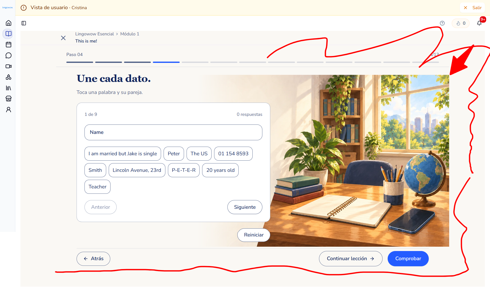
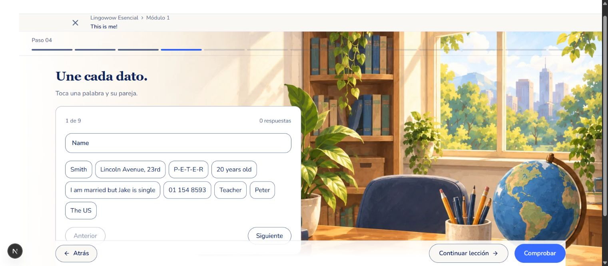
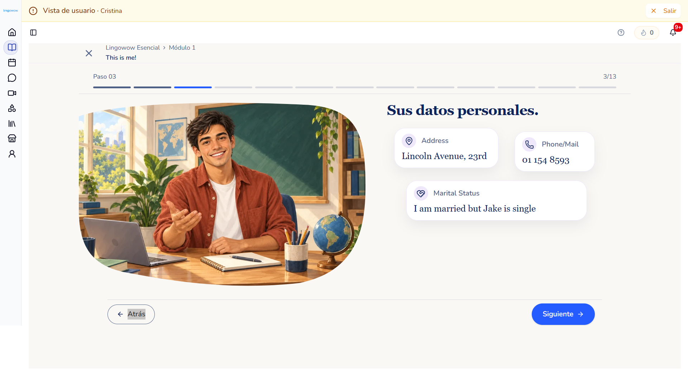
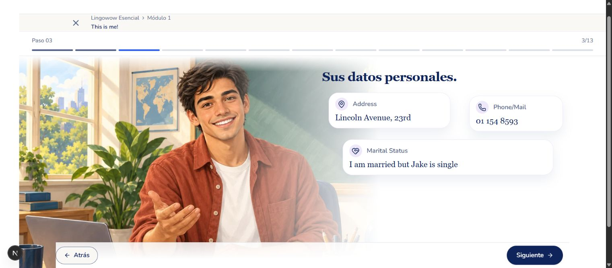
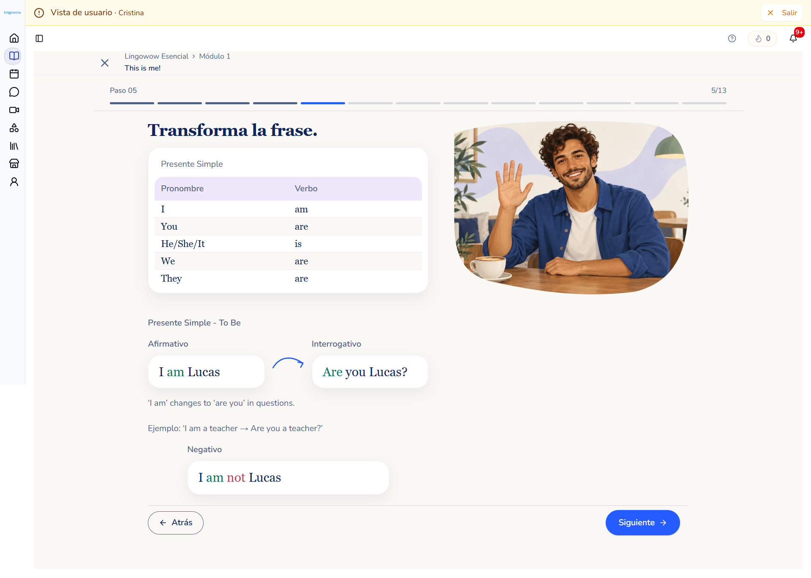
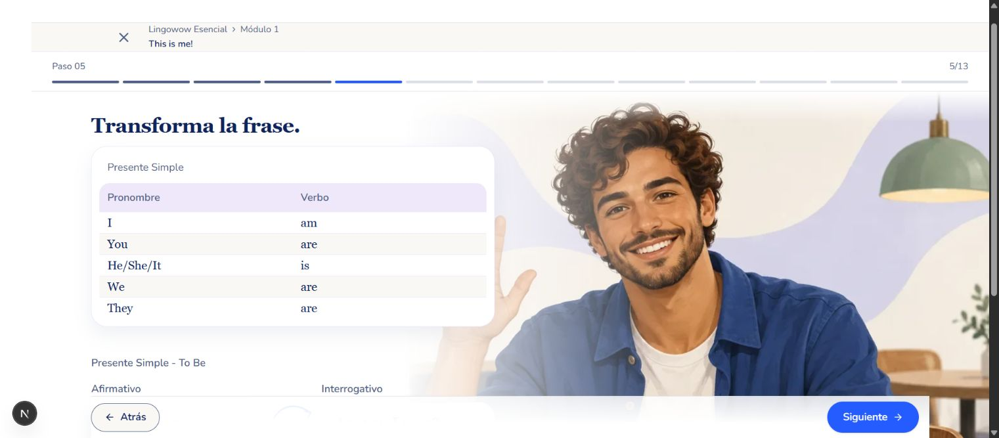

<!doctype html><meta charset="utf-8"><title>Lienzo completo — comparación visual</title><style>body{font:16px system-ui;background:#faf8f4;color:#10245c;margin:24px}section{display:grid;grid-template-columns:1fr 1fr;gap:20px;margin-bottom:32px}img{width:100%;height:auto}h2{grid-column:1/-1}figure{margin:0}figcaption{margin:12px 0}</style><section><h2>practice</h2><figure><figcaption>Referencia anotada aprobada</figcaption></figure><figure><figcaption>Implementación real en Chrome, 1520 px</figcaption></figure></section><section><h2>peter</h2><figure><figcaption>Referencia anotada aprobada</figcaption></figure><figure><figcaption>Implementación real en Chrome, 1520 px</figcaption></figure></section><section><h2>lucas</h2><figure><figcaption>Referencia anotada aprobada</figcaption></figure><figure><figcaption>Implementación real en Chrome, 1520 px</figcaption></figure></section>